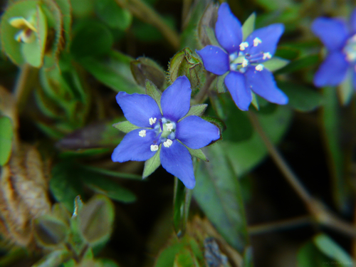

Hydroleaceae
Waterleaf Family
Hydroleaceae is a small family of flowering plants placed in the order Boraginales. It contains only a single genus, Hydrolea, with about 12-20 species of herbs or subshrubs. These plants are typically found in tropical and subtropical wetlands and are often characterized by glandular hairs and sometimes sharp axillary spines.
Overview
The Hydroleaceae family, represented solely by the genus Hydrolea, comprises annual or perennial herbs and subshrubs adapted to moist or wet environments like marshes, ditches, and pond margins. They are distributed primarily in tropical and warm temperate regions of the Americas, Africa, Asia, and Australia. Historically, Hydrolea was often placed within the Hydrophyllaceae family, but recent molecular studies support its placement in a distinct family within the order Boraginales.
Plants in this family are often recognizable by their conspicuous glandular hairs covering stems and leaves, giving them a sticky or clammy feel. Many species also possess sharp spines in the leaf axils, a distinctive feature within the genus. Their flowers are typically blue or white and relatively showy.
Ecologically, Hydroleaceae species are components of wetland ecosystems. While not of major economic importance, some species may be considered weeds in certain agricultural contexts (like rice paddies), and others might have minor local uses or potential horticultural value due to their attractive flowers.
Quick Facts
- Scientific Name: Hydroleaceae R.Br. ex Edwards
- Common Name: Waterleaf Family (sometimes associated with Hydrophyllaceae)
- Number of Genera: 1 (Hydrolea)
- Number of Species: Approximately 12-20
- Distribution: Pantropical and subtropical regions
- Evolutionary Group: Eudicots - Asterids - Lamiids - Boraginales
Key Characteristics
Growth Form and Habit
Members are annual or perennial herbs or subshrubs, often growing erect or sprawling. They inhabit wet places like swamps, marshes, riverbanks, and ditches. Stems and leaves are typically covered in glandular hairs, and many species bear sharp spines in the leaf axils.
Leaves
Leaves are simple, usually alternate (though sometimes appearing opposite just below the inflorescence), sessile or shortly petiolate, and typically lanceolate to ovate in shape with entire (smooth) margins. Glandular hairs are usually present on the leaf surfaces.
Inflorescence
Flowers are borne in terminal or axillary cymose inflorescences, which can sometimes appear racemose or paniculate. Occasionally, flowers may be solitary in the leaf axils.
Flowers
Flowers are bisexual, actinomorphic (radially symmetrical), and typically 5-merous. Key features include:
- Calyx: Composed of 5 distinct or basally fused sepals, which are persistent in fruit and often glandular-hairy.
- Corolla: Composed of 5 fused petals, forming a rotate (wheel-shaped) to campanulate (bell-shaped) structure, typically blue, violet, or white.
- Androecium: 5 stamens, alternate with the corolla lobes, inserted on the corolla tube (epipetalous). Filaments are often dilated or winged at the base. Anthers dehisce longitudinally.
- Gynoecium: Ovary is superior or sometimes half-inferior, composed of 2 (rarely 3) fused carpels forming 2 (rarely 3) locules. Placentation is axile with numerous ovules per locule. There are 2 (rarely 3) distinct styles, each with a capitate stigma.
Fruits and Seeds
The fruit is a capsule that dehisces septicidally (splitting along the septa) or loculicidally (splitting into the locules), or sometimes irregularly. The capsule contains numerous small seeds with fleshy endosperm.
Chemical Characteristics
The presence of glandular hairs suggests the production of various exudates, potentially including volatile oils or resins, though the specific chemistry is not as extensively studied or characteristic as in some larger families. They generally lack iridoids, which distinguishes them from some other Lamiid orders.
Field Identification
Identifying Hydrolea species involves looking for a combination of habitat, vegetative, and floral characteristics:
Primary Identification Features
- Habitat: Plants found in wet or moist environments (marshes, ditches, pond edges).
- Habit: Herbs or subshrubs, often covered in sticky glandular hairs.
- Spines: Presence of sharp axillary spines in many species is a key diagnostic feature.
- Leaves: Simple, alternate, entire margins.
- Flowers: 5-merous, actinomorphic, blue/violet/white corolla, 5 stamens.
- Ovary/Styles: Superior or half-inferior ovary with 2 distinct styles.
Secondary Identification Features
- Inflorescence Type: Cymose, terminal or axillary.
- Fruit: Capsular, containing many small seeds.
- Stamen Base: Filaments often dilated at the base.
Seasonal Identification Tips
Identification is most reliable during the flowering and fruiting season:
- Summer/Fall: Typically the peak flowering period when the blue or white flowers are conspicuous. Mature leaves and the presence/absence of spines are easily observed.
- Late Summer/Fall: Developing or mature capsules can aid identification.
- Vegetative State: The combination of glandular hairs, alternate entire leaves, and often axillary spines in wet habitats can suggest Hydrolea even without flowers.
Common Confusion Points
Hydrolea might be confused with members of other families, especially in vegetative state:
- Boraginaceae (Borage family): Many Boraginaceae are hairy (though often bristly rather than glandular), but they typically have a gynobasic style arising from between 4 ovary lobes (or a terminal style on an unlobed ovary) and often coiled cymose inflorescences (scorpioid cymes).
- Solanaceae (Nightshade family): Some Solanaceae can be glandular-hairy and have 5-merous flowers, but they typically have 2 carpels forming a single style (not 2 distinct styles) and fruit is usually a berry or capsule with different morphology.
- Campanulaceae (Bellflower family): While some have blue, 5-merous flowers, Campanulaceae typically have an inferior ovary and milky latex.
- Verbenaceae/Lamiaceae: Some members grow in wet areas and can be hairy, but they usually have opposite leaves and often zygomorphic (bilaterally symmetrical) flowers.
Field Guide Quick Reference
Look For:
- Wet habitat herbs/subshrubs
- Glandular hairs (often sticky)
- Axillary spines (common)
- Alternate, simple, entire leaves
- 5-merous blue/white flowers
- Superior/half-inferior ovary
- 2 distinct styles
Key Variations:
- Presence or absence of spines
- Flower color intensity (pale blue to deep violet)
- Degree of glandular hairiness
- Ovary position (superior vs. half-inferior)
Notable Examples (Genus Hydrolea)
Since the family contains only the genus Hydrolea, here are some representative species:

Hydrolea zeylanica
Blue Waterleaf / Sky Flower
A widespread species in tropical Asia, Africa, and Australia, often found in rice paddies and marshes. It is typically spineless or weakly spiny, with bright blue flowers and glandular hairs.

Hydrolea ovata
Hairy Waterleaf / Ovate False Fiddleleaf
Native to the southeastern United States. Characterized by its dense covering of glandular hairs, ovate leaves, prominent axillary spines, and relatively large, showy blue-purple flowers.

Hydrolea spinosa
Spiny Waterleaf / False Fiddleleaf
Found in the Americas (from southern US to South America). As the name suggests, it typically bears conspicuous axillary spines. Flowers are usually blue. Variable in hairiness.
Phylogeny and Classification
Hydroleaceae's phylogenetic position has been debated. Traditionally placed within or near Hydrophyllaceae (now largely included in Boraginaceae sensu lato), molecular data strongly supports its placement as a distinct family within the order Boraginales. Boraginales itself is sister to the large Lamiid clade (including orders like Lamiales, Solanales, Gentianales).
Within Boraginales, Hydroleaceae appears to be one of the earlier diverging lineages, possibly sister to the rest of the order or part of a basal grade. The order Boraginales is characterized by features like bristly or glandular hairs and often coiled (scorpioid) cymes, though the latter is not typical of Hydroleaceae.
Position in Plant Phylogeny
- Kingdom: Plantae
- Clade: Angiosperms (Flowering plants)
- Clade: Eudicots
- Clade: Asterids
- Clade: Lamiids
- Order: Boraginales
- Family: Hydroleaceae
Evolutionary Significance
The Hydroleaceae family, though small, is significant for understanding the early evolution of the Boraginales order:
- Basal Position: Represents a potentially early diverging lineage within Boraginales, retaining features like distinct styles that differ from the more derived gynobasic style in many Boraginaceae s.s.
- Adaptation to Wetlands: Shows specific adaptations (glandular hairs, spines, tolerance to wet conditions) for thriving in wetland environments.
- Biogeography: Its pantropical/subtropical distribution provides clues about the historical dispersal patterns of the Boraginales lineage.